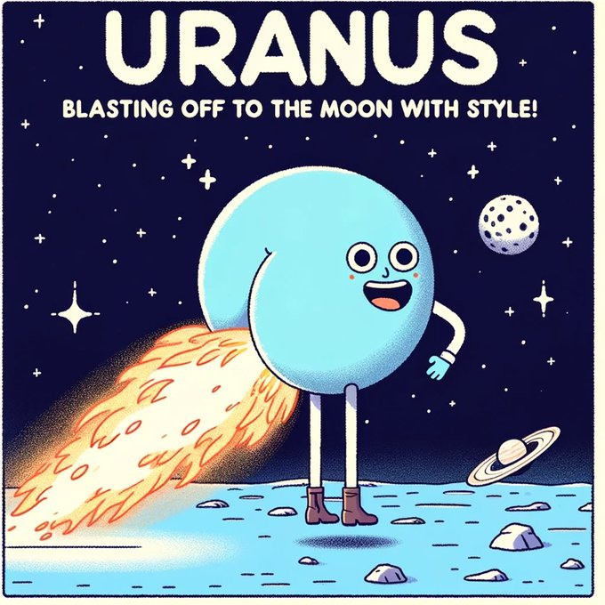
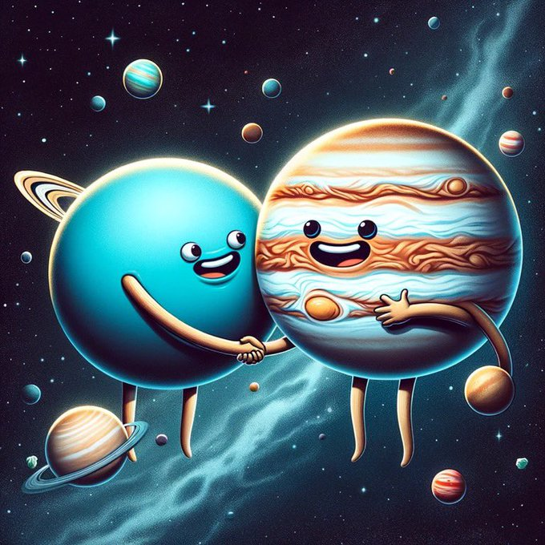

A day on Uranus is 17 hours and 14 minutes.
Uranus, the ruler of Aquarius, starts 2024 in retrograde, going direct on Saturday, January 27, then retrogrades again on Sunday, September 1. This suggests ongoing evolution in your home life and personal growth. Uranus champions individuality, social justice, and authenticity. During its retrograde, focus on living by your values and perhaps engage more actively in humanitarian efforts. In 2024, the location of the Sun on the March equinox is in the constellation of Pisces but also on the border of Aquarius. So, we are slowly moving into a new age, from Pisces to Aquarius. Aquarius is ruled by Uranus, the planet that governs innovation, technology, and surprising events. Uranus perfectly mirrors Aquarius' distinctive attitude, complementing the nontraditional nature of these visionary air signs Everyone Loves to Pump Uranus more than they like when Uranus Dumps. The liquidity injections just keep coming into Uranus. Don't pass gas (it's gonna be giant) Hold onto Uranus! Disclaimer: This is all in good fun - a blend of memes, astrology, and crypto. We will not go to the moon, we're going to Uranus
Uranus is a very cold and windy planet. It is surrounded by faint rings, and more than two dozen small moons as it rotates at a nearly 90-degree angle from the plane of its orbit. This unique tilt makes Uranus appear to spin on its side.
Uranus is the seventh planet from the Sun, and it's the third largest planet in our solar system about four times wider than Earth. The diameter at its equator is 51,120 kilometers.
Astronomer William Herschel tried unsuccessfully to name his discovery Georgium Sidus after his patron, England's King George III. Instead, the planet was eventually named for Uranus, the Greek god of the sky, who was also the father of Kronos (or Saturn in Roman mythology).